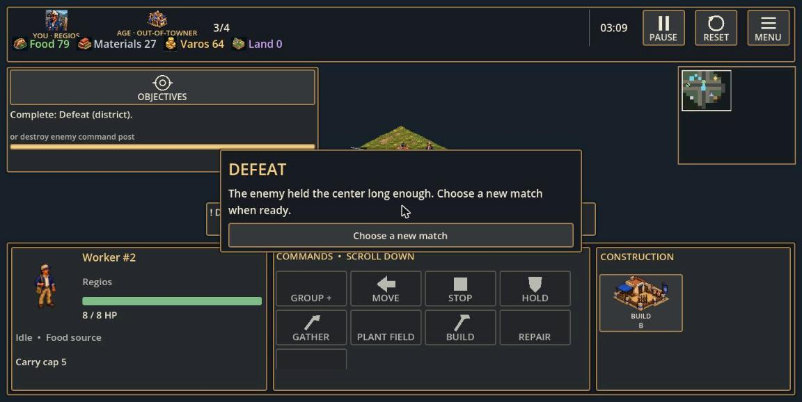
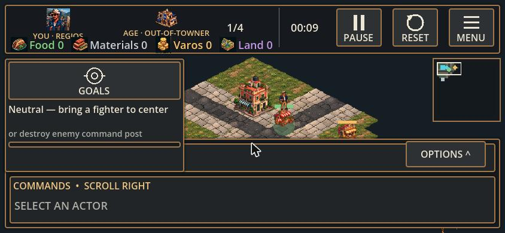
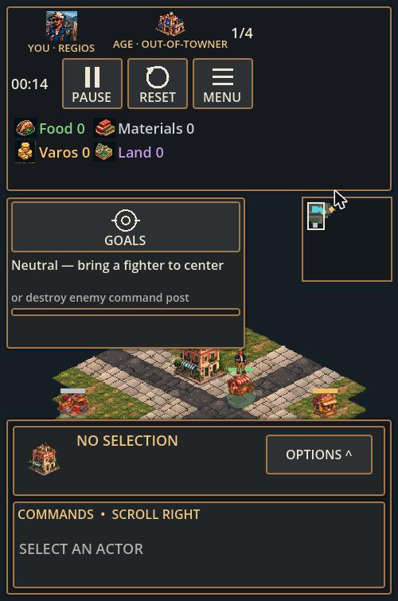
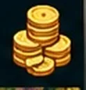
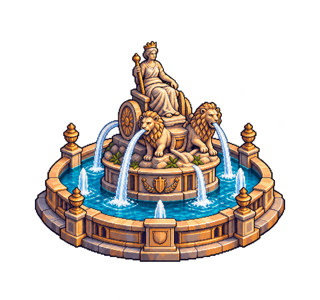

I played the live itch build on desktop, then at phone sizes. I also read the GDD, the rules data and the lore drafts. The short version: the art is good and the writing is excellent. The game underneath is AoE2's outline with very little inside it, and none of the jokes from the writing made it into the rules.
Settings: Quick match, Regios, solo skirmish, La Roma small (28×28), default difficulty. I played like a newcomer who knows RTS games but not this one.



Tap any row for the evidence and the fix. Severity means "would stop me recommending it", not "how hard it is to fix".
A clone would at least have AoE2's depth. Today you have AoE2's skeleton at a few percent of its content, dressed in Mexican tiles. Calling factions "fictional strategies" in the picker doesn't make them strategies when they're one or two stat modifiers.
That's also why chasing "AoE2 fidelity" is the wrong target. AoE2 DE costs about $20, has ~50 civilizations and 25 years of balance behind it, and your core audience already owns it. You can't beat it at its own game. You can beat it at the one thing it will never have: a city whose problems are the rules.
| Dimension | AoE2 DE (approx.) | La Roma today | What to aim for |
|---|---|---|---|
| Factions | ~50, each with unique units and tech | 4 · 1–2 stat tweaks each | 4 with one verb each |
| Unit types | dozens + uniques | 5 generic (Worker, Melee fighter…) | 8 archetypes + 4 uniques |
| Buildings | ~25 | 5 + field | 10, each a joke and a decision |
| Techs | 100+ | 5 (2 faction-locked) | Age-up choice cards instead |
| Pop cap | 200 | 24 | fine for web, if fights happen |
| City systems | none (medieval) | none | rent · traffic · quincena · marchas |
| Reason to return | ranked, campaigns, mods | 3 tutorial missions | meta + seasons ("semestres") |
Every card below quotes your own lore draft (landing v3 / match setup v2). Toggle between what the game does with that line today and what it could do.
These are the signals behind my pick. Figures come from trade press citing AppMagic and Sensor Tower, and the providers disagree with each other, so read them as direction rather than exact numbers.
I scored each format from 1 to 5 on six criteria. Move the sliders to weight what matters to you and the ranking updates. With my defaults, the auto-battler wins. It only loses if you weight market momentum or retention heavily, and then the puzzle or tycoon options climb, at a much higher cost.
A rough HTML prototype of the format I recommend. Buy archetypes from the street market, merge 3 copies to upgrade, place them, then watch the fight. You play 6 rounds against "ghost" boards (in the real game these would be other players' saved boards). Rent goes up with each age. Lose all your deposit and you're out.

6
Your own line, "The character didn't change. Their rent did.", already describes a progression system. Between runs, your apartment moves through the four ages. You unlock cosmetics and new archetypes, never stat power. And the rent keeps going up.
The targets below are proposals to argue over, not benchmarks. Your North Star doc is right that there's no baseline yet.
match_completed = run completed.docs/design/GDD.md, game/content/skirmish.v1.json, battle-for-la-roma-landing-lore-v3.html, battle-for-la-roma-match-setup-lore-v2.html